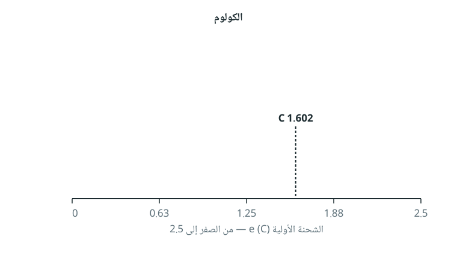

الكولوم
Coulomb
الكولوم وحدة الشحنة الكهربائية في النظام الدولي، ورمزه C، ويساوي أمبيراً في ثانية. ومنذ 2019 يُعرَّف عبر الشحنة الأولية e، فالكولوم الواحد يساوي 1/(1.602 176 634×10⁻¹⁹) شحنة أولية.
الكولوم هو وحدة الشحنة الكهربائية في النظام الدولي للوحدات، ورمزه C. وهو وحدة مشتقة لا أساسية: يُعرَّف بأنه الشحنة التي تعبرها شدة تيار أمبير واحد في زمن ثانية واحدة، أي 1 C = 1 A·s. وبما أن الأمبير صار معرَّفاً بتثبيت الشحنة الأولية e عند 1.602 176 634×10⁻¹⁹ كولوم، فإن الكولوم الواحد يحتوي بالضبط 1/(1.602 176 634×10⁻¹⁹) شحنة أولية، أي نحو 6.241 509×10¹⁸ إلكتروناً. وقانون كولوم للقوة بين شحنتين نقطيتين يُكتب F = k_e·q₁·q₂/r²، وفيه k_e = 1/(4π·ε₀). مثال: شحنتان نقطيتان كل منهما كولوم واحد تفصل بينهما مسافة متر واحد تتبادلان قوة نحو 8.988×10⁹ نيوتن، وهي قوة هائلة تُبيّن أن الكولوم وحدة كبيرة جداً على مقياس الشحنات الساكنة.
كيف تعمل الظاهرة؟
الشحنة خاصية جوهرية للجسيمات تحدد كيف تتفاعل كهرمغنطيسياً، والكولوم وحدة قياسها. حين تعبر شحنات مقطعاً موصلاً بمعدل معلوم، يكون التيار حاصل ضرب المعدل في شحنة الوحدة. وفي الموصل المعدني تُحمل الشحنة بإلكترونات التوصيل، وفي المنحلّ الكهربائي تُحمل بأيونات موجبة وسالبة تتحرك في اتجاهين متعاكسين، وفي البلازما بإلكترونات وأيونات. والقوة بين شحنتين ساكنتين تتناسب طردياً مع حاصل ضربهما وعكسياً مع مربع المسافة بينهما، وهي التي يصفها قانون كولوم. ولذلك فالكولوم ليس مجرد عدّ إلكترونات: هو وحدة تُقاس بها الشحنة أياً كان حاملها.
العلاقة بالأرقام
1 C = 1 A·s. وQ = I·t. وعدد الشحنات الأولية في كولوم = 1/e = 6.241 509 074×10¹⁸. وقانون كولوم F = k_e·q₁·q₂/r² مع k_e = 1/(4π·ε₀) = 8.987 551 787×10⁹ N·m²/C². وطاقة شحنة في جهد E = Q·V. مثال: شحنتان 1 C تفصلهما 1 m تتبادلان F = 8.988×10⁹ N. ومكثف 100 µF مشحون إلى 12 V يحمل Q = 100×10⁻⁶ × 12 = 1.2×10⁻³ C.
مفاهيم متقاربة
الكولوم كمية والشحنة خاصية: الكولوم وحدة، والشحنة مقدار. والفرق عن الأمبير فرق بين متكاملة ومشتقة. والفرق عن الفاراد أن الفاراد يقيس القدرة على تخزين شحنة لكل فولت، والكولوم يقيس الشحنة نفسها. والفرق عن الجول أن الجول طاقة والكولوم شحنة، والعلاقة E = Q·V. ولا يجوز الخلط بين الكولوم والكولوم/كغ: الثانية جرعة مُمتصة في الإشعاع المؤيِّن، والأولى شحنة صرفة.
حدود التطبيق
الكولوم وحدة كبيرة جداً على مقياس الشحنات الساكنة، فالشحنة النموذجية في التجارب الساكنة من رتبة ميكروكولوم أو أقل، ويُستعمل مضاعفاتها وأجزاؤها. ولا يصحّ وصف الشحنة الكلية لنظام بأنها «عدد صحيح من الكولوم» بلا تحديد دقة القياس. وفي الأنظمة النسبية لا تبقى الشحنة الكلية مقداراً لامتغيّر بسيطاً عند تبديل الإطار المرجعي كما تبقى الكتلة السكونية. ولا تُستعمل وحدة الكولوم لقياس تدفق الإشعاع، فذلك شأن وحدات أخرى.

| الكمية | القيمة | المصدر |
|---|---|---|
| الشحنة الأولية e | 1.602 176 634×10⁻¹⁹ C | [1] |
| عدد الشحنات الأولية في كولوم واحد | 6.241 509 074×10¹⁸ — | [2] |
| ثابت كولوم k_e | 8.987 551 787×10⁹ N·m²/C² | [3] |
المصادر
- 1 SI base unit: ampere (A) — BIPM (2019). www.bipm.org/en/si-base-units/ampere · اطُّلع عليه 2026-11-21
- 2 The International System of Units (SI), 9th edition (2019) — BIPM — Bureau International des Poids et Mesures (2019). www.bipm.org/en/publications/si-brochure · اطُّلع عليه 2026-11-21
- 3 CODATA Value: elementary charge — NIST — CODATA 2022 recommended values (2024). physics.nist.gov/cgi-bin/cuu/Value?e · اطُّلع عليه 2026-11-21
استشهد بهذا المصطلح
الصيغتان مبنيتان من بيانات الصفحة نفسها: العنوان والتاريخ ورابط النسخة المنشورة.
الكولوم — Coulomb. (2026). ديوان المعرفة — انفراد. https://infiradev.com/diwan/terms/term-coulomb.html
@misc{term-coulomb2026,
title = {الكولوم},
titleaddon = {Coulomb},
howpublished = {{ديوان المعرفة — انفراد} — مرجع علمي عربي},
year = {2026},
url = {https://infiradev.com/diwan/terms/term-coulomb.html},
urldate = {2026-11-26},
note = {مراجعة علمية: hermes (مراجعة معتمدة 2026-11-26)}
}
راجعه: hermes (مراجعة معتمدة 2026-11-26) · 2026-11-26 · آخر تحديث 2026-11-21